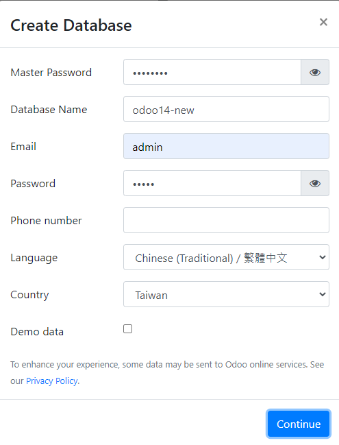
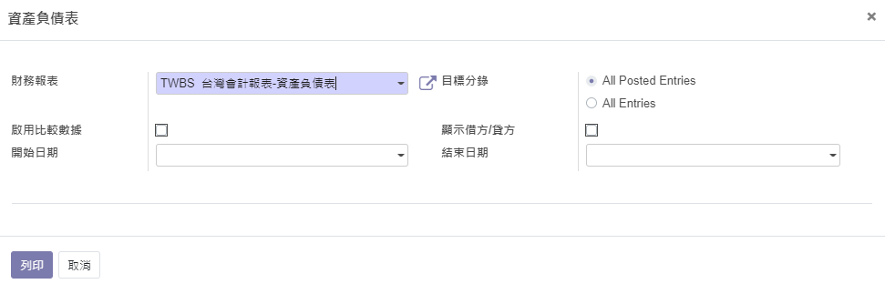
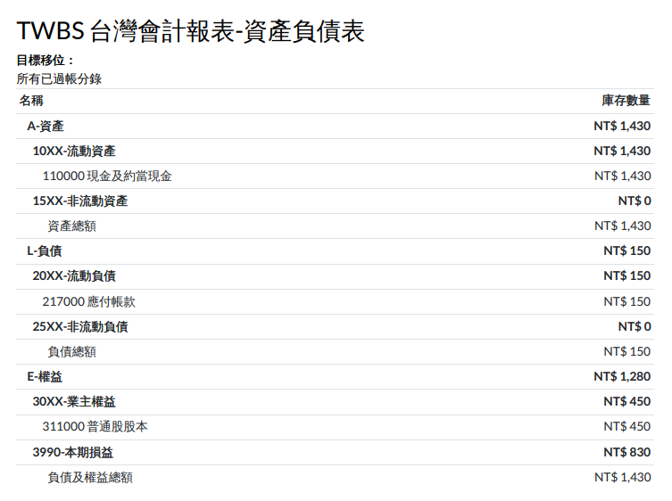
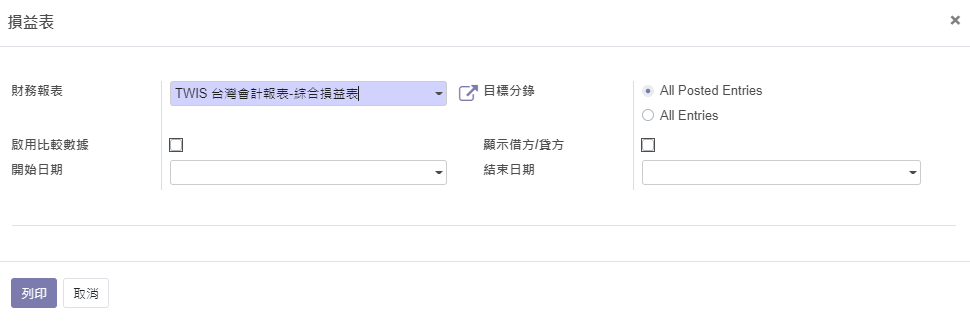
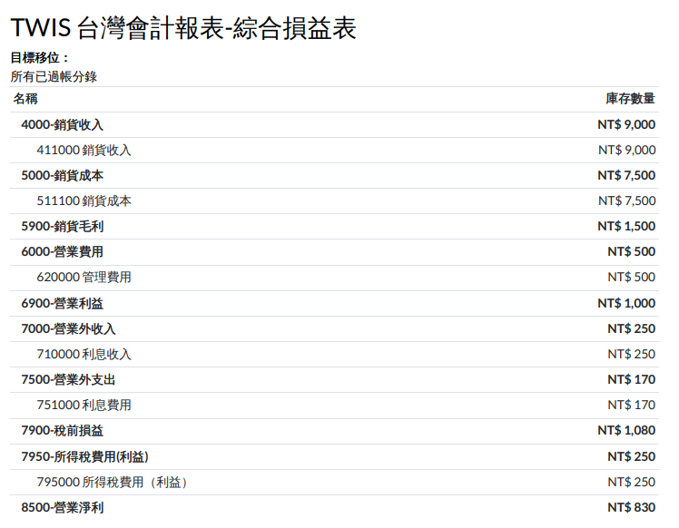

台灣常用會計項目與台灣財務報表結構(社區版)
依台灣需求匯入會計項目與台灣財務報表結構
本模塊於15版進行功能任務調整，調整後提供以下功能：
*1.台灣常用會計項目匯入
*2.依odoo社區版財務報表模組(accounting_pdf_reports)為報表基礎呈現之台灣使用習慣財務報表結構
相關社區版財務報表運作方式、元植財務報表邏輯結構與年度結轉方式請詳以下文章：
社區版會計報表與元植財報結構設計說明
本模組使用流程
Step0:將必要模組放入addon資料夾，重啟odoo並更新模組列表
Step1:啟動資料庫，語言/國家如下圖方式選擇

Step2:搜尋本模組並安裝即可
財務報表結構呈現




想利用odoo，成為新時代的數位轉型顧問?
透過完整培訓與陪伴是你達成夢想的最快捷徑
【元植odoo應用雲端教室】 與你一起搭建你的未來職涯藍圖
課程平台連結：https://odoo-classroom.yuanchih-consult.com/
你剛好也在台灣嗎?
每月互動研討會：https://www.yuanchih-consult.com/r/seminar